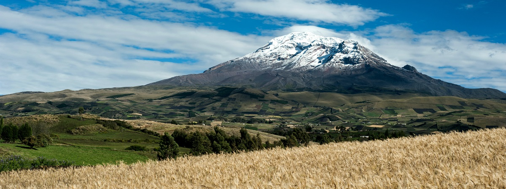

CHIMBORAZO (ECUADOR)
Reserva Chimborazo
El Chimborazo, la montaña más elevada del Ecuador, es el rostro de esta reserva. El coloso mide 6.268 metros de altitud y está rodeado por un inmenso arenal con un páramo seco, diferente a la mayoría. La reserva, sin embargo, provee de agua a las tres provincias donde se asienta: aquí están las fuentes que alimentan a los ríos Ambato, Chambo y Chimbo.
Las aguas del Chimbo terminan en el gran río Guayas, vínculo que está representado en el Escudo Nacional. La conexión entre el Chimborazo y el río Guayas es símbolo de la unidad entre Costa y Sierra. La reserva alberga una importante población de vicuñas reintroducidas desde Perú y Chile en 1988.
También hay llamas y alpacas, animales domésticos nativos del Ecuador y que eran utilizados por los antiguos pobladores de los Andes antes de que los españoles introdujeran caballos, ovejas, vacas y burros. La reserva se creó para proteger estos animales y su legado histórico, así como el extraño páramo del que son parte.
El Chimborazo es el principal atractivo de la reserva. El nevado es macizo, amplio y gigante. Se puede ascender a él desde Riobamba y Guaranda. Varios naturalistas lo visitaron en los siglos XVIII y XIX, incluido Alexander von Humboldt, quien nos dejó dibujos donde compara la vegetación que observó en los distintos pisos altitudinales del Chimborazo y del Cotopaxi. Ese estudio hoy es considerado la base para la fitogeografía, ciencia que estudia la distribución de las plantas sobre la Tierra.